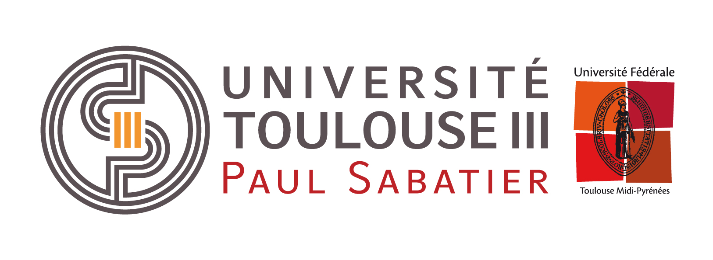

| Semestre 1 | Semestre 2 | |||||||
| Ress | R1.01 | R1.03 | R1.06 | R1.07 | R2.01 | R2.04 | R2.07 | R2.09 |
| 60% | 24% | 6% | 15% | 15% | 15% | 12% | 21% | 12% |
Cette SAÉ permet une première réflexion autour des stratégies
algorithmiques pour résoudre un même problème.
En partant d'un besoin exprimé par un client, il faut réaliser une implémentation, comparer plusieurs
approches pour la résolution d'un problème et effectuer des mesures de performance simples.
Livrables attendus dans le monde professionnel
Cette SAÉ permet d'approfondir la réflexion sur l'approche algorithmique des problèmes rencontrés pendant les phases de
développement.
L'approche doit s'intéresser à l'implémentation bas niveau (par exemple chemins d'exécution, structures de données)
ainsi qu'à haut niveau (par exemple précision des résultats, benchmarks, etc.).
Livrables attendus dans le monde professionnel
L'objectif de cette ressource est l'initiation au développement. Cette ressource est nécessaire pour la réalisation d'un
développement d'application et l'optimisation des applications informatiques.
Savoirs de référence étudiés
– Algorithmes fondamentaux (structures simples, recherche d'un élément, parcours, tri…)
– Algorithmes sur les structures de données (itératifs et/ou récursifs)
– Manipulation de listes, tableaux, collections dynamiques, statiques (accès direct ou séquentiels), piles, files,
structures
– Types abstraits de données simples : première approche de l'encapsulation
– Notions de modularité
– Premières notions de qualité (par ex. : nommage, assertions, documentation, sûreté de fonctionnement, jeu d'essais,
performance…)
– Lecture/écriture de fichiers
L'objectif de cette ressource est de découvrir la structure et les composants d'un ordinateur. Cette ressource permet de
découvrir les différents composants matériels et logiciels internes qui constituent un ordinateur, de manière à
appréhender le fonctionnement, mais aussi les limites de leur utilisation.
Savoirs de référence étudiés
- Architecture générale d'un ordinateur, histoire et évolution de l'informatique
– Codage (codage des informations de base : nombres, caractères)
– Arithmétique des traitements associés
– Étude d'un ordinateur personnel (composants…)
– Évolution des technologies et des systèmes
– Les différents savoirs de référence pourront être approfondis
L'objectif de cette ressource est de mettre en place les outils mathématiques nécessaires aux bases de l'informatique.
Elle aide à formaliser et mettre en œuvre des outils mathématiques pour l'informatique. Elle accompagne la mise en
place des bases de données en explicitant les structures fondamentales de ces dernières.
Savoirs de référence étudiés
– Logique (prédicats, propositions…)
– Théorie des ensembles
– Algèbre de Boole
– Arithmétique modulaire
– Relations, applications
Prolongements suggérés
– Dénombrement
– Numération
L'objectif de cette ressource est la remise à niveau des notions mathématiques de base. Cette ressource donne les
outils mathématiques fondamentaux nécessaires à la programmation informatique.
Savoirs de référence étudiés
– Calcul numérique et algébrique
– Systèmes et matrices (pivot de Gauss)
– Graphes de fonction
– Polynômes
Prolongements suggérés
– Géométrie du plan
L'objectif de cette ressource est d'initier au développement orienté objets. La réalisation d'un développement
d'application et l'optimisation des applications informatiques passent par la compréhension des paradigmes objets.
Savoirs de référence étudiés
– Concepts fondamentaux du développement orienté objets
– Initiation à la conception orientée objet détaillée (par ex. : diagramme de classes, séquence…)
– Application orientée objets des algorithmes sur des structures de données (par ex. : collections…)
L'objectif de cette ressource est de comprendre le fonctionnement des couches systèmes et réseaux bas niveau. Cette
ressource permet de découvrir les multiples technologies et fonctions mises en œuvre dans un réseau informatique et
de comprendre les rôles et structures des mécanismes bas niveau mis en oeuvre pour leur fonctionnement.
Savoirs de référence étudiés
– Étude d'un système à microprocesseur ou microcontrôleur avec ses composants (mémoires, interfaces,
périphériques…)
– Langages de programmation de bas niveau et mécanismes de bas niveau d'un système informatique
– Étude d'architectures de réseaux et notion de pile protocolaire
– Technologie des réseaux locaux : Ethernet, wifi, protocoles TCP et IP (TCP/IP) , routage, commutation, adressage,
transport
– Les différents savoirs de référence pourront être approfondis
L'objectif f de cette ressource est de faire découvrir les graphes et l'utilisation de ces derniers à travers des algorithmes
simples et des situations courantes de programmation. Elle permet d'appréhender le concept de graphe d'un point de
vue mathématique et algorithmique. Elle présente les problèmes classiques qui font intervenir cette notion et compare
les méthodes de résolution usuelles.
Savoirs de référence étudiés
– Graphes orientés et non orientés, concepts et outils, arbres
– Parcours
– Plus court chemin
– Outils descriptifs pour l'ordonnancement
– Étude de problèmes usuels (affectation, flots, colorations, transitivité…)
– Les différents savoirs de référence pourront être approfondis
L'objectif de cette ressource est d'appréhender les notions de suites en vue d'une meilleure compréhension de la
programmation et de la récursivité. Elle vient présenter différentes méthodes de résolution algorithmique, pour des
problèmes mathématiques courants. Elle permet au travers de la notion de suite, de donner une première approche
des principes de la récursivité.
Savoirs de référence étudiés
– Suites, récurrence (récursivité)
– Méthodes numériques et résolution numérique (résolution d'équations, approximation et interpolation polynomiale…)
– Les différents savoirs de référence pourront être approfondis